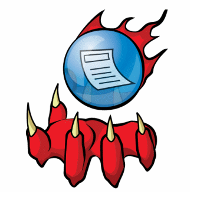

FeedDemon

FeedDemon es uno de los lectores RSS más rápidos en cuanto a
la agregación de las noticias para su posterior lectura, pero
con los inconvenientes (como sucede a la mayoría de las opciones
de escritorio) de sólo estar disponible para Windows. Para saber
un poco más del lector, os recomiendo: